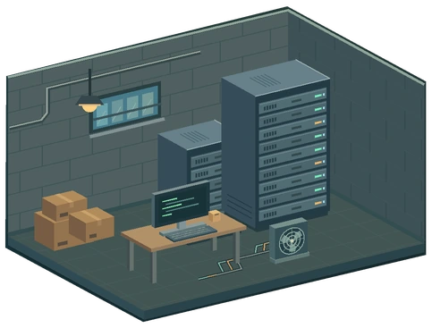
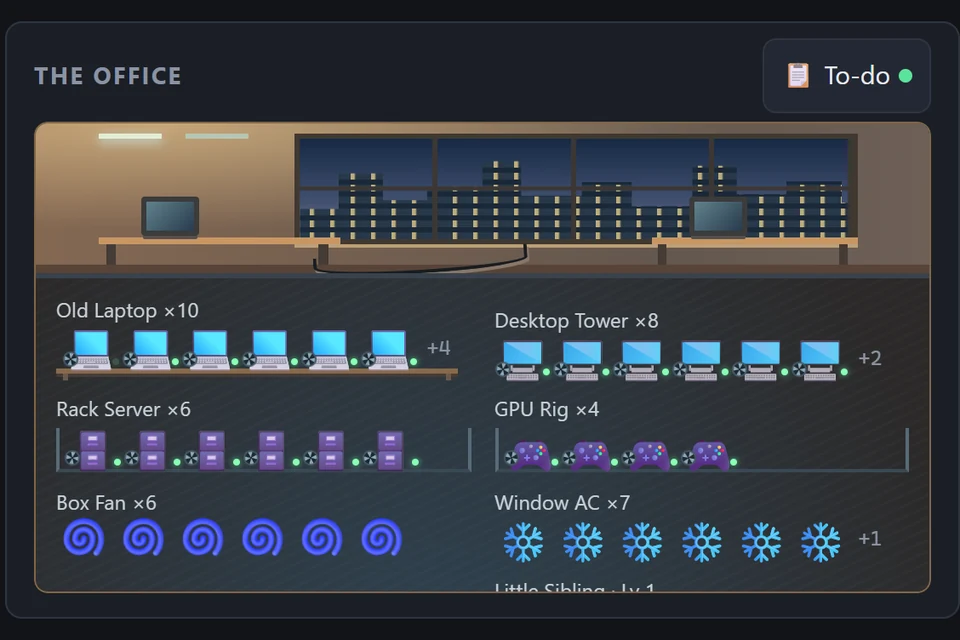
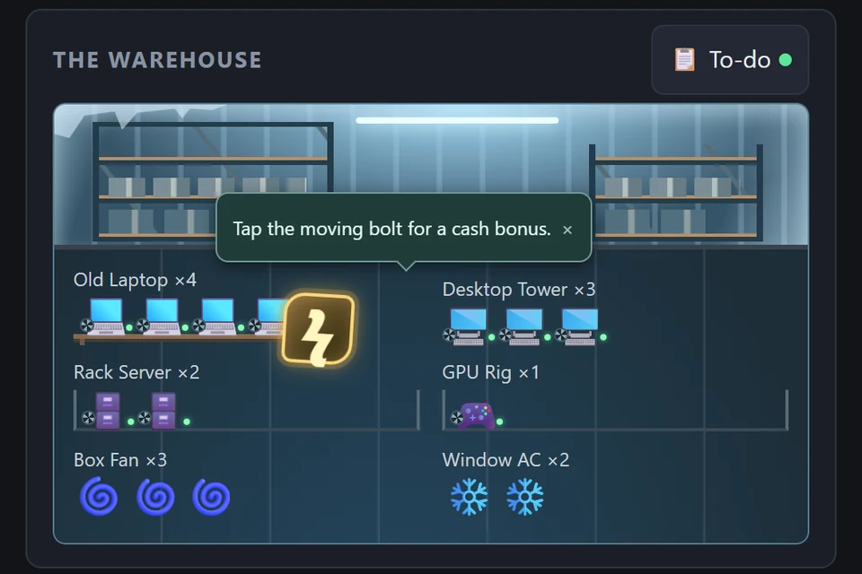
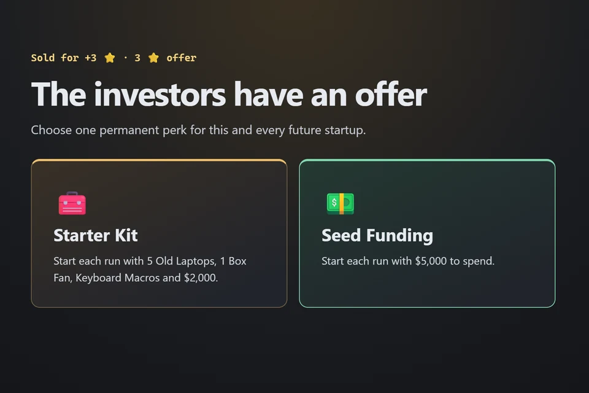

Mom, It's
a Startup
Run a startup in your parents' basement.
Try not to trip the breaker.

What is it?
“Mom, it's a startup.” That's your explanation for the server next to the washing machine. Your first customer needs a job run. Your first computer is a laptop. Your first office is downstairs, and your parents would like to know why the fan has been on all night.
Tap to run jobs, then spend your earnings on machines that work while you're away. A tenth laptop can be a great investment. So can the box fan that lets the other nine get back to work. Hire your Little Sibling to take the tapping shift, catch a priority request, or turn up the power and keep one eye on the smoke alarm.
Earn enough to move out. The Arctic Warehouse has cooling to spare. The Downtown Office pays more for jobs. Sell the startup and take your reputation back to the basement, where the next run comes with investor perks and the chance to set up shop in a dead mall. The food court finally has a tenant.
Inside the game


Downtown Office
Land better-paying jobs upstairs.


Arctic Warehouse
Catch a priority request between jobs.


Investor perks
Pick what carries into your next run.
How to play
- Run a job. Tap the button to earn your first dollars.
- Buy machines. Start with a laptop. Each machine brings in money on its own.
- Watch the heat. Add cooling before an overheated room slows everything down.
- Move out. Reach the move goal, then pick your next location.
- Sell the startup. Trade this run for investor reputation and start again with a head start.
FAQ
Does it work offline?
Yes. Open the game online once and let it finish loading. After that you can play offline on the same device and browser.
Where is my progress saved?
Your browser saves progress on this device. Use Save backup in Settings to make a copy or move your game to another device.
Is it free?
Yes. The game is free, with no ads or in-app purchases.
How do I give feedback?
Open Feedback in the game's Settings, or describe what happened on the game's GitHub Issues page.